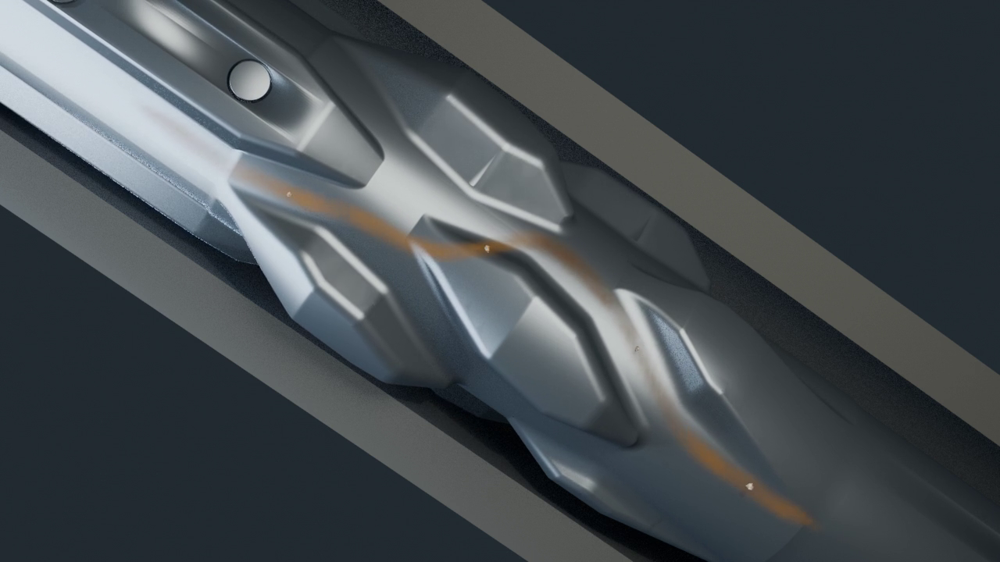
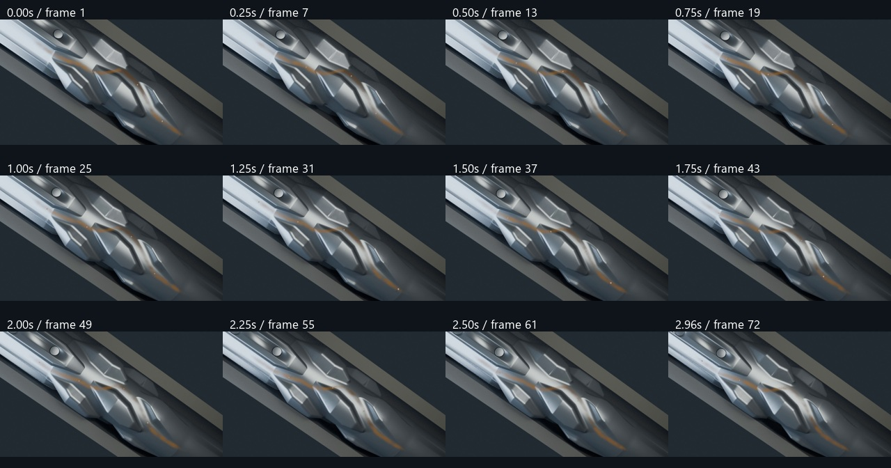

Three-second proof: slow clockwise tool rotation, upward circulation and transported rock fragments. A shaded amber volume and matte rock fragments follow one selected passage around a rotating pad, seen from a stationary camera. Illustrative motion, not CFD or measured operating speed.

